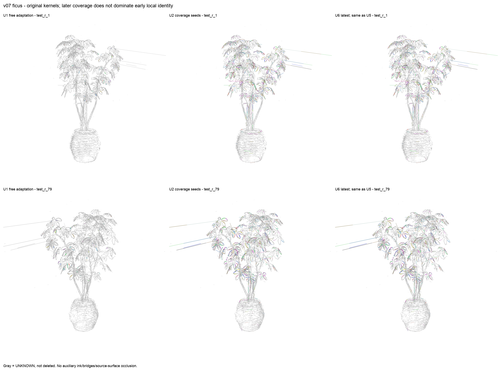
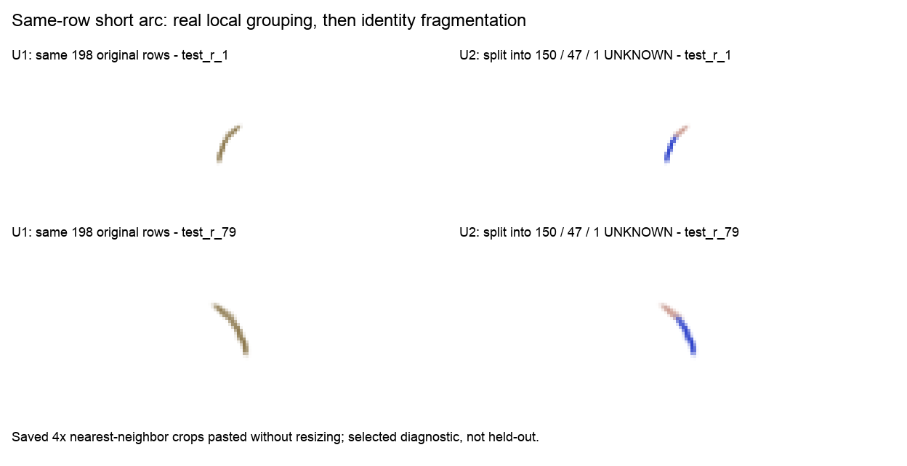

结论：PARTIAL，不建议替换原v05/v06参考成果。
本窗口确实从“旧片段不能拆”转向逐核自由竞争、辅助模型更新/拆分/合并/出生，原核本身仍冻结。六个真实实验全部数值退出0，最后一轮结束于19:21:45 JST，模型最终交付19:31:22结束。19:15停开新轮的预定边界已经过去，停止属于行政窗口，不是证明方法空间耗尽。
当前只有局部跨片段短弧和支持汇集的证据，没有证明新增完整长直边/长曲边，没有认证物理同边、完整误并安全、盲held-out或时间稳定性。多方向候选、种子预算和独立对应证据仍限制结果；不能把此预算下的失败扩大成所有自由重归属方法不可能。

列依次为U1、U2、U6，行是固定相机test_r_1与test_r_79。灰色是UNKNOWN，核没有被删；原有长尖刺、叠线、碎裂都保留。只有成员标签/辅助解释变化，原核几何不变。无源表面遮挡，不画辅助曲线或补gap；不能只凭颜色宣布同边恢复。

左为U1组144的同核集合，右为U2同一198行的新标签，双视图可见分色。图片只排列保存的4倍最近邻裁剪并加标签/白边，没有重绘、拉伸原始图片或新科学渲染。该案例为后验诊断，不是随机代表性或盲测。
完整机器证据见 PARENT_INDEPENDENT_ACCEPTANCE.json。源码本地提交 6eb3d6d9ecd74d8aef9ffdecea15bcfe84f1b90b，36源码Git blobs与第6轮冻结快照逐SHA匹配，分支 line-kernel-free-reassignment-v07 工作树clean；没有push/merge，旧分支不动。源码保持封存字节，非零whitespace检查另存，不宣称lint全绿。
ficus_v07_original_kernels_and_variants.zip：完整原始gaussians.npz原字节副本、固定相机、U1/U2/U4/U6四个互不自动融合的候选版本，包含完整MEMBERSHIP、辅助MODELS、颜色、统计和谱系。U1保留早期局部短弧，U6保留最新完整状态；“最新”不等于“最好”。v07_reports_and_real_figures.zip：全部6轮报告、5,652条科学原核PNG、各轮不可变源码快照、协议/退出/封存记录、父级验收和中文图文报告。不是所有大体积候选图/cache/每轮NPZ的完整镜像；未打包的原始记录继续封存在服务器。line_kernel_id为零起始原行号，edge_id=-1为UNKNOWN；primitive_id是旧线parent，不是源RGB高斯ID。所有身份仍provisional。要看同组颜色，使用对应 DISPLAY_COLORS.npz 的colors作为原核显示副本，保留原几何/opacity；不要把辅助MODELS画成新线补洞。原资产不是完整RGB场景模型。
真实多视图有序线轨对应生成新三维曲线候选，而不是仅给现有局部图边增加奖励。两张图/相机已核对，但可靠可见性、线轨对应和新3D提案尚未实现验证。这个后续实验没有运行，也不是本次取得的成果。当前不继续扫半径、奖励或拟合预算。
原始封存根：/mnt/hdd1/u00134/radegs_paper_reproduction_v01/line_kernel_free_reassignment_v07_20261101。原始Astra逐轮详细报告见 FINAL_REPORT_ZH.md 和 units/；本报告的工程PASS不升级其科学PARTIAL。